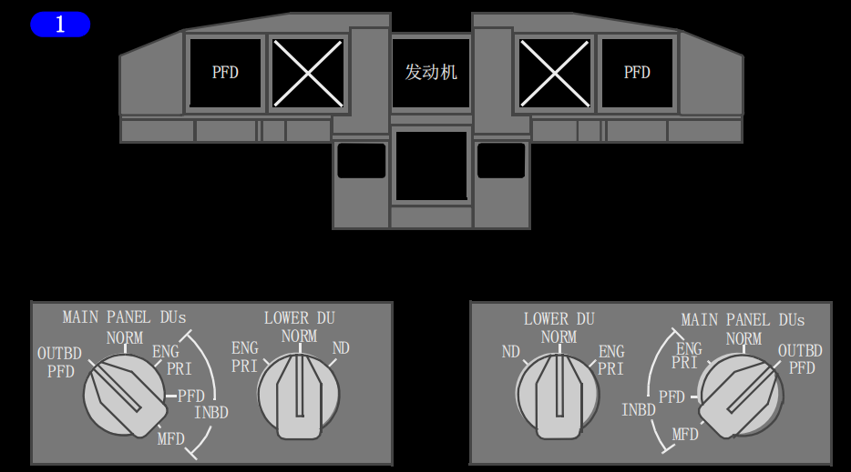
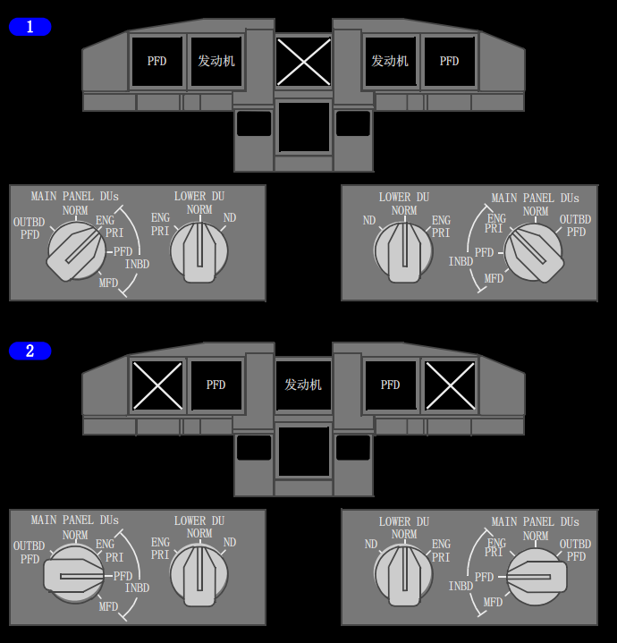
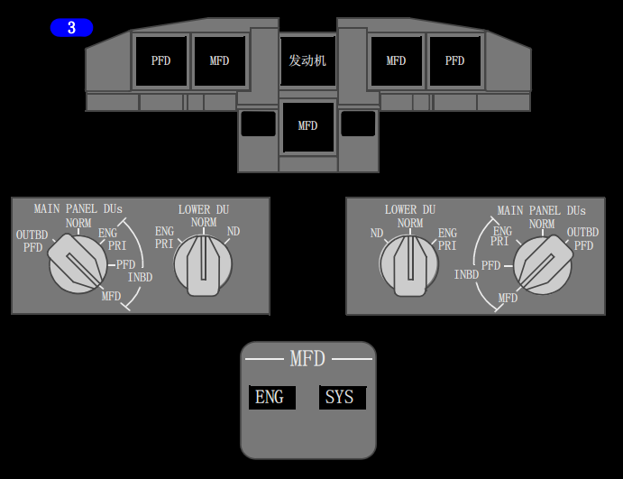
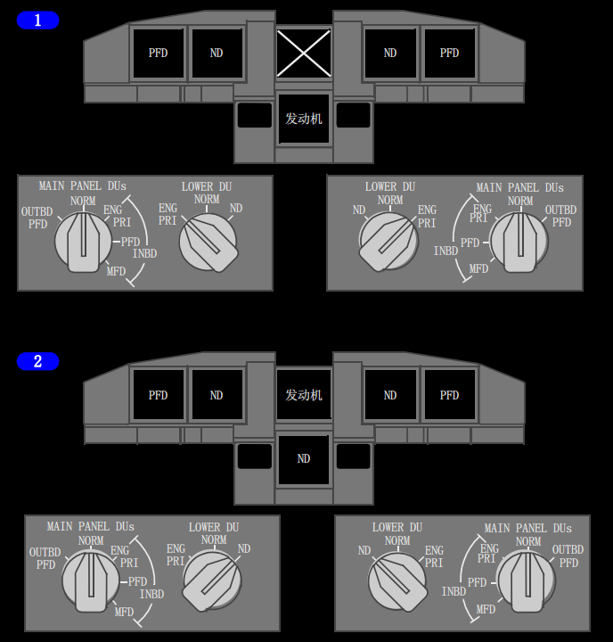

内部相关链接:
导航转换(显示源控制)
大气数据
1 主面板显示组件(MAIN PANEL DUs) 选择器
选择相应外侧和内侧显示组件上显示的内容：
• 外侧主飞行显示(OUTBD PFD) - 在外侧显示组件上显示PFD，内侧显示组件显示空白
• 正常(NORM) - 在外侧显示组件显示PFD，在内侧显示组件上显示ND
• 内侧发动机主显示(INBD ENG PRI) - 在内侧显示组件上显示主发动仪表，在外侧显示组件上显示PFD
• 内侧主飞行显示(INBD PFD) - 在内侧显示组件上显示PFD，外侧显示组件显示空白
• 内侧多功能显示(INBD MFD) - 在外侧显示组件上显示PFD，内侧显示组件显示空白。内侧显示组件保持空白，直到用发动机显示控制面板上的MFD电门选择了系统格式(SYS)或辅助发动机格式(ENG)。
在正常显示形态下，仅下部显示组件上的视频监视可用。(选型)
2 下部显示组件(LOWER DU)选择器
选择下部显示组件上显示的内容：
• 发动机主显示(ENG PRI) - 在下部显示组件上显示发动机主要的仪表，上部显示组件显示空白
• 正常(NORM) - 显示组件通常显示空白，或显示发动机显示控制面板上选择的MFD格式,或驾驶舱进入视频面板上选择的视频监视(DSPL)(选型)
• 导航显示(ND) - 在下部组件上显示导航显示。
1 外侧显示组件失效
如果一个外侧显示组件失效，PFD将自动显示在内侧显示组件上，外侧显示组件空白。
2 内侧显示组件失效
如果一个内侧显示组件失效，则PFD格式仍将显示在外侧显示组件上，内侧显示组件空白。
3 上部显示组件失效
如果上部显示组件失效，则主发动机显示自动转移至下部显示组件，上部显示组件空白。
如果下部显示组件上已有次要发动机显示，那么将呈现紧凑发动机显示。
Note: 下部DU失效时不能自动转换。

1 主面板(MAIN PANEL)显示组件(DU)转换到外侧主飞行显示(OUTBD PFD)
如果将主面板的显示组件电门调置到外侧主飞行显示(OUTBD PFD)位，则PFD格式显示在外侧显示组件上，内侧显示组件空白。


1 主面板(MAIN PANEL)显示组件(DU)转换到内侧发动机主要显示(INBD ENG PRI)
如果将主面板的显示组件电门调置到内侧主发动机显示(INBD ENG PRI)位，则主发动机显示移至内侧DU，PFD格式显示在外侧DU上，上部DU空白。
2 主面板(MAIN PANEL)显示组件(DU)转换到内侧主飞行显示(INBD PFD)
如果主面板的显示组件电门调置到内侧PFD(INBD PFD位，则PFD格式显示在内侧DU上，外侧DU空白。
3 主面板(MAIN PANEL)显示组件(DU)转换到多功能显示(MFD)
如果主面板的显示组件电门调置到内侧MFD(INBD MFD)位，则PFD继续显示在外侧显示组件上，内侧显示空白。使用发动机显示控制组件上的MFD电门可将系统格式(SYS)或次要发动机格式(ENG)选择到内侧显示组件和下部显示组件。

1 下部显示组件(LOWER DU)转换到发动机主要显示(ENG PRI)
如果下部显示组件电门调置到发动机主要显示(ENG PRI)位，则发动机显示转换至下部DU上，上部DU空白。
2 下部显示组件(LOWER DU)转换到导航显示(ND)
如果下部DU电门调置到ND位，则上部DU上显示发动机显示，下部DU上显示导航显示。当选择了MFD ENG电门时, 在上侧DU上呈现紧凑发动机显示。